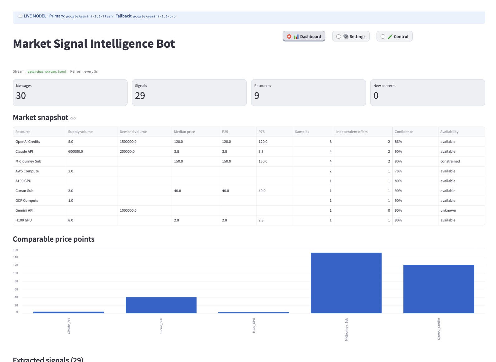

Extracting auditable market signals from noisy chat streams through context assembly, OpenRouter structured extraction, deterministic normalization, and aggregation—visualized in a real-time Streamlit Dashboard.

This system focuses on extracting market signals rather than generic chat summaries: identifying who is supplying/demanding what resource, prices, volumes, transaction commitments, and maintaining a strict provenance trail back to the source messages.
| Field | Description |
|---|---|
msg_id | Unique identifier, serves as the root of all provenance. |
user_id / group_id | Sender and channel boundaries. |
timestamp | Event occurrence time. |
text | Raw chat text (never altered during ingestion). |
reply_to | Used to construct explicit thread chains. |
intent: buy / sell / inquiry / observation_past / irrelevant / transaction_completed.price / volume as floats. raw_price_str / raw_volume_str preserve the original ambiguous strings (e.g., "30% off").source_msg_ids, confidence_score (0.0 to 1.0), and explanation.Context is the conversational unit required to understand a market signal. Instead of sending messages one by one (missing context) or all at once (high token cost, hallucination risk), messages are grouped dynamically.
| Strategy | Rule | Result |
|---|---|---|
| 1. Reply Thread | Trace explicit reply_to links to build a full thread (oldest to newest). | Captures multi-party negotiation accurately. |
| 2. Time Window | Group messages from the same user and group within a 5-minute inactivity window. | Captures self-corrections and split sentences. |
| 3. Standalone | Messages with no replies and outside the time window. | Processed individually. |
The pipeline is designed to handle messy, informal chat data. Below are the key scenarios handled and the exact chat logs representing them.
Users often make typos and correct themselves in a subsequent message. Time-window context assembly groups these together so the LLM extracts only the final corrected value.
Result: Extracts a single sell signal for Claude_API at price 3.8.
Informal markets use slang (e.g., "8-card", "below 4"). The normalization layer maps aliases to canonical entities, while the schema retains raw strings when parsing fails.
Result: "A100s" maps to A100_GPU. "below 4" is stored in raw_price_str.
Brokers often spam the exact same message across multiple channels. The normalization layer calculates a content hash and suppresses duplicates within a time window.
Result: Only the first message generates a market signal. Subsequent identical hashes are suppressed.
Complaints about quotas or reminiscing about past prices should not affect current market depth or median price calculations.
Result: Intent classified as observation_past and irrelevant. Ignored during aggregation.
A single message containing multiple distinct resources and prices. The schema enforces a List[MarketSignal] output to capture all entities.
Result: Generates two signals: one for AWS_Compute and one for GCP_Compute.
Replies form a thread where the final commitment relies on the resource mentioned at the root of the thread. Reply-chain assembly handles this seamlessly.
Result: Extracts a transaction_completed signal for OpenAI_Credits at price 120 with volume 5.
Prices in informal markets often contain extreme outliers (e.g., misquotes). We use confidence-weighted median prices rather than arithmetic means to ensure robustness.
| Metric | Calculation Method |
|---|---|
| Median Price | Calculated from active buy and sell signals. Heavily weights high-confidence signals. |
| Price Range | Min and Max prices within the active signal window. |
| Independent Signals | Total number of unique signals contributing to the resource trend. |
The raw signal feed displays the LLM's direct output, including the original strings (raw_price_str), the confidence score, the AI's explanation, and the exact source message IDs for full auditability.